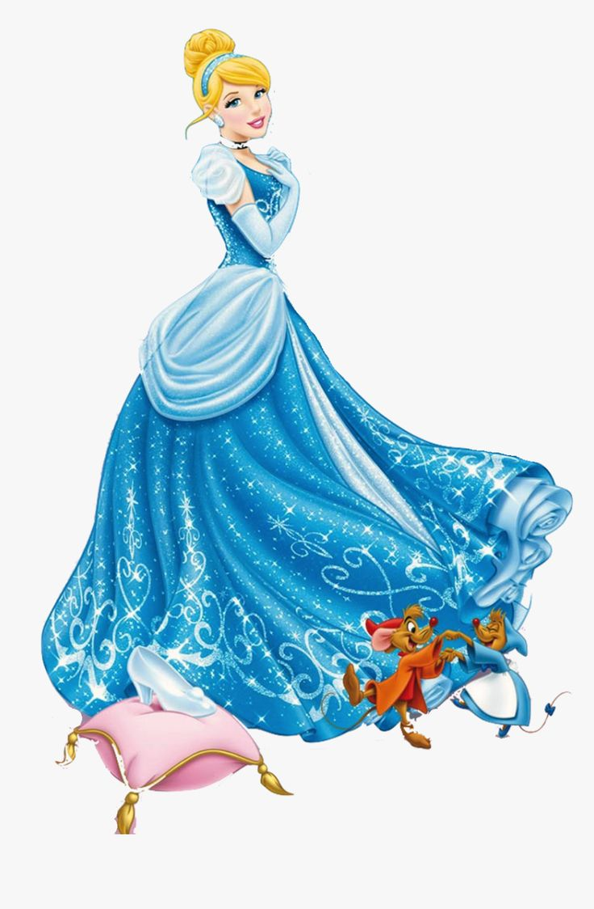

Cinderella is a famous fairy tale about a kind and hardworking young woman.Despite the difficulties she faces, she remains hopeful and kind.
With the help of her fairy godmother, Cinderella attends the royal ball and meets the prince. However, she must leave before midnight and accidentally leaves behind a glass slipper.
The prince searches for the owner of the slipper and finally finds Cinderella.The story teaches us about kindness, hope, and believing that difficult situations can change.
Read more about Cinderella